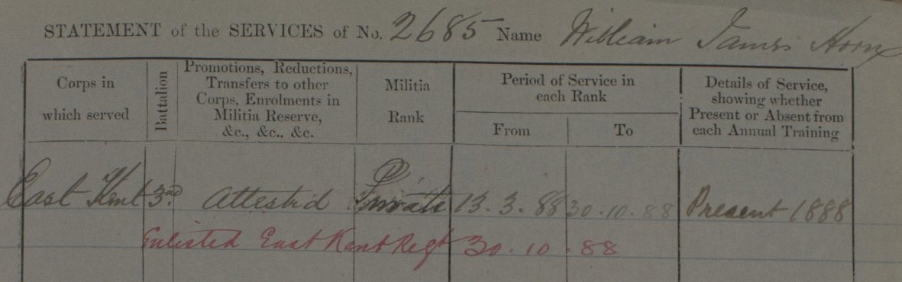
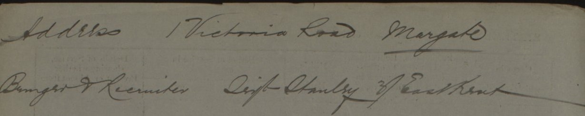
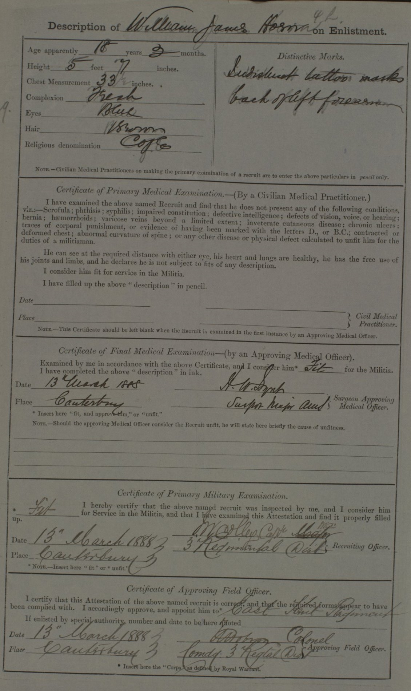
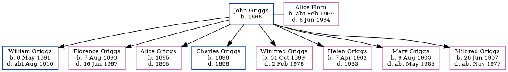

William James Horn cAug 1871 - c1935
[ Home ] | [ Calendar ] | [ Surnames Index ] | [ Census Index ] | [ Family History ]A laborer and the child of John Horn (an agricultural laborer) and Charlotte Spratt (a laundress), William Horn, the first cousin three-times-removed on the father's side of Nigel Horne, was born in Northdown, Margate, Kent, England c. Aug 18711,2 and baptized in Margate, Kent, England on Oct 8, 1871.
During his life, he was living at Victoria Road in Margate on Apr 3, 18814; and at 17 Victoria Road in Margate in 1888. On Oct 30, 1888 he was serving in the army (regiment: Buffs (East Kent Regiment); Service number: 2685).
He died c. Aug 1935 in Thanet, Kent, England3.
Parents
- John was born c. 1822
- Charlotte Anne was born c. 1840
Citations
- British Army Service Records - Findmypast
- England & Wales births 1837-2006 - Findmypast
- England & Wales deaths 1837-2007 - Findmypast
- 1881 England, Wales & Scotland Census - Findmypast (was age 10 and the son of the head of the household)
Media
William James Horn - Army Record 3

William James Horn - Army Record 4

William James Horn - Army Record 2

William James Horn - Army Record 3
William James Horn - Army Record 4
England & Wales deaths 1837-2007 - BMD/D/1935/3/AZ/000381/099
British Army Service Records 1760-1915 Transcription - GBM-WO96-37-1236731
Family Tree
Generated by ged2site. Last updated on Jun 11, 2024